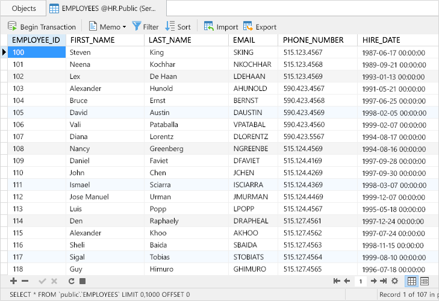
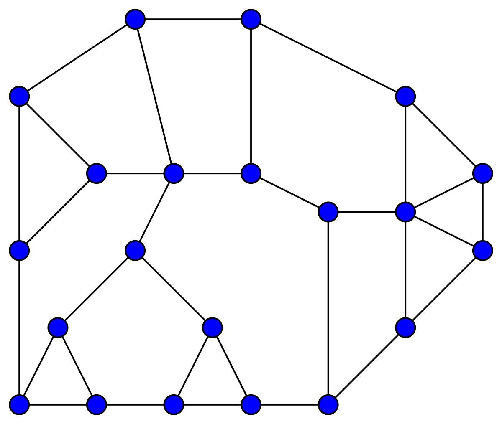
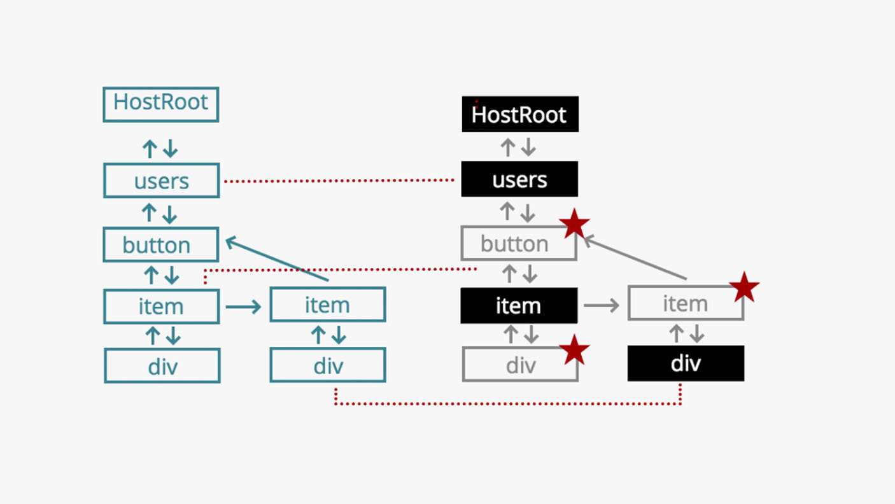
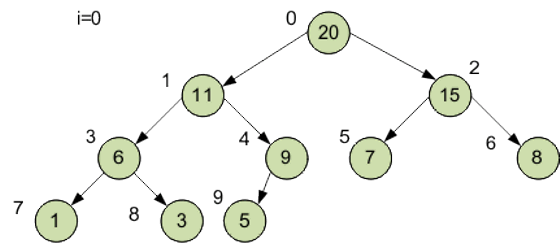
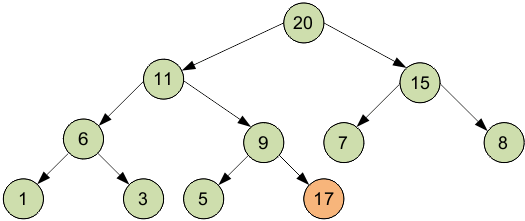
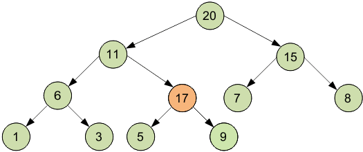
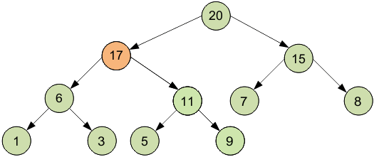
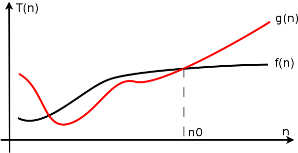

Алгоритмы и структуры данных меняющие современный Frontend
XBSoftware
Вопросы на сегодня:
Для чего фронтенд программисту нужно знать структуры данных и алгоритмы?
Disclaimer
Структура данных — программная единица, позволяющая хранить и обрабатывать множество однотипных и/или логически связанных данных в вычислительной технике.
Wikipedia
Алгори́тм — набор инструкций, описывающих порядок действий исполнителя для достижения некоторого результата.
Wikipedia


Структуры данных помогают решать правильно и эффективно поставленные задачи, путем наилучшего представления информации под использующиеся алгоритмы.
Дашукевич Владимир
Дерево
Типы деревьев:
Красно-чёрное дерево
Куча
Префиксное дерево
B-дерево
R-дерево
АВЛ-дерево
и другие
DOM дерево
Операция
Сложность
Метод
Добавление
O(1)
insertBefore, appendChild, append, prepend, after, before
До 8 элементов - обычный массив [[ключ, значение], ...]
Свыше 8 (до 32) элементов - Bitmap хэш таблица
Свыше 32 элементов - хэш массив из Bitmap хэш таблиц
HAMT в ImmutableJS
Очередь и стек
React Fiber
Перестроение DOM в React Fiber
Построение/сравнение VDOM
Применение изменений
Приоритеты React Fiber
Синхронные операции
Задачи для следующего такта
Анимации
Высокоприоритетные
Низкоприоритетные
Задачи на изменения вне экрана

Структуры данных в React Fiber
Стек
Очередь с приоритетами
Стек на массиве
Операция
Сложность
Добавление элемента
О(1)
Удаление элемента
О(1)
Очередь на связанном списке
Операция
Сложность
Добавление элемента
О(1)
Удаление элемента
О(1)
Очередь с приоритетами
Очередь с приоритетами
Операция/Сложность
Массив
Сорт. массив
Связанный список
Добавление элемента
О(1)
О(n)
О(n)
Получение элемента
О(n)
О(1)
О(1)
Куча
Кучи
Двоичная куча
Биномиальная куча
Фибоначчиева куча
Тонкая куча
Толстая куча
и другие
Двоичная куча для максимума
Значение в любой вершине не меньше, чем значения её потомков
На i-ом слое 2^i вершин, кроме последнего.
Последний слой заполнен слева направо

Изменения очереди



Очередь на двоичной куче
Операция
Сложность
Добавление элемента
О(log n)
Получение элемента
О(log n)
Поиск макс. элемента
О(1)
Что использует React Fiber?
Связанный список
Очередь с приоритетами
Операция/Сложность
Куча
Связанный список
Добавление элемента
О(log n)
О(n)
Получение элемента
О(log n)
О(1)
Поиск макс. элемента
О(1)
О(1)

Выводы
Интересуйтесь структурами данных и соответствующими им алгоритмами
Почаще заглядывайте в код инструментов, которыми вы пользуетесь
Не бойтесь неизменяемых структур данных
Использование правильной структуры данных, позволяет решить задачу эффективнее
Вопросы на сегодня:
Для чего фронтенд программисту нужно знать структуры данных и алгоритмы?
Для отрисовки форм на любом фреймворке или написания алгоритма валидации данных не нужны знания о структурах данных, но для действительно серьезных и сложных задач эти знания необходимы.